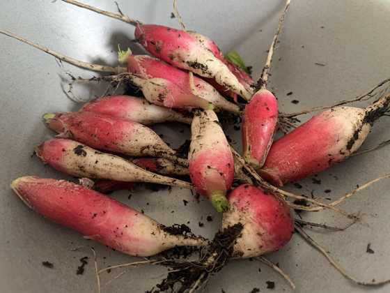
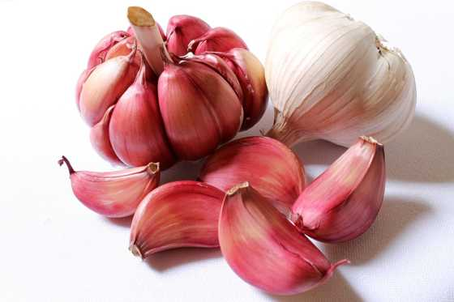
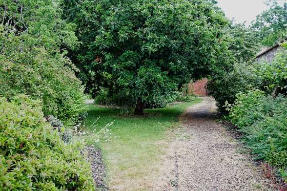
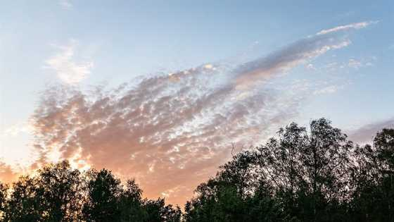
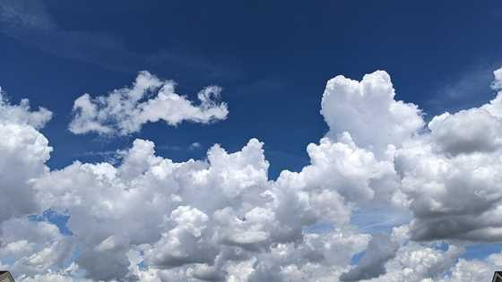
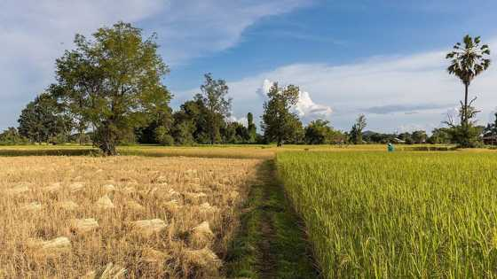
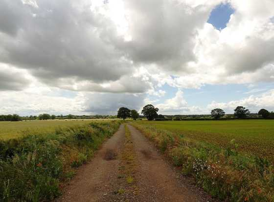
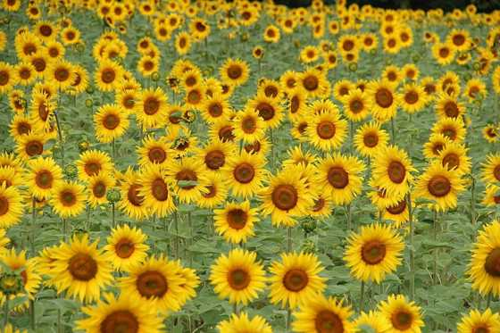
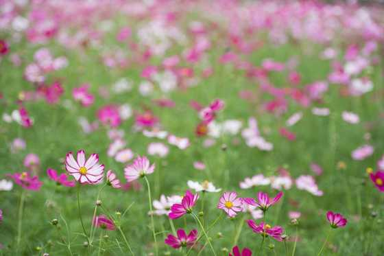
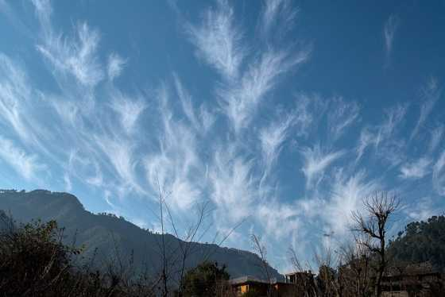

千葉県山武市美杉野
地元の野菜で、
身体にやさしいあかりを。
さんぶの森元気館の隣で、地元産の野菜をたっぷり使ったランチをいただける、ほっとひと息つくお店です。

お店のこと
Instagramの紹介文によると、カフェ・キッチンあかりは「さんぶの森元気館の隣りにオープン」したお店で、「地元産の野菜をいっぱいに使った身体に優しいランチ」を提供しています。新鮮な野菜や雑貨の販売もあると紹介されています。
情報源: 公式Instagram
「あかり」という店名の意味は確認できていません。このページの見出しやコンセプト文は、確認できた事実をもとにした制作側のイメージです。












口コミ(イメージ例)
以下は制作側が作ったイメージ例で、実際のお客様の声ではありません。
イメージ例
野菜の味がしっかり感じられて、食べ終わるころには身体がぽかぽかしました。
イメージ例
落ち着いた雰囲気で、ゆっくりランチができそうなお店です。
イメージ例
地元の野菜をお土産に選べるのも嬉しいポイントです。
アクセス
| 所在地 | 〒289-1224 千葉県山武市美杉野2丁目3-1 |
|---|---|
| @cafe_kitchen_akari |
所在地は情報源により番地の表記が異なります(Instagramでは美杉野2-2-11)。お出かけ前にInstagramでご確認ください。